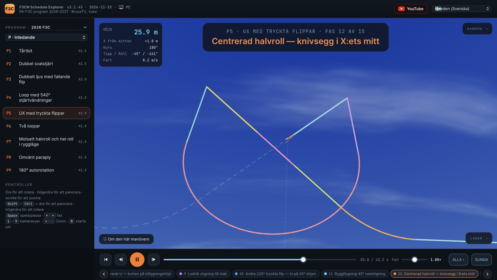
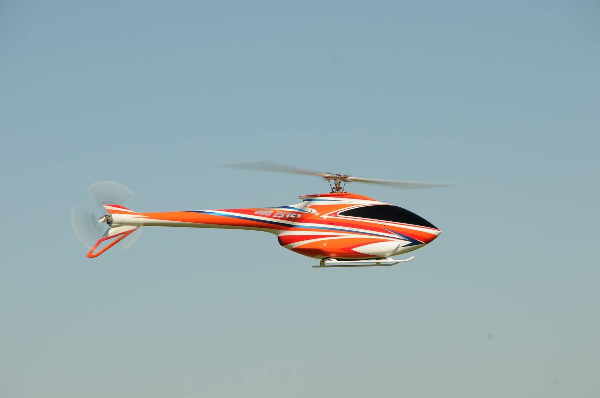
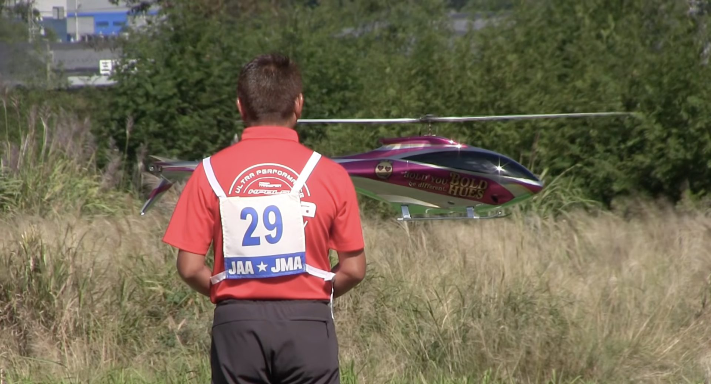
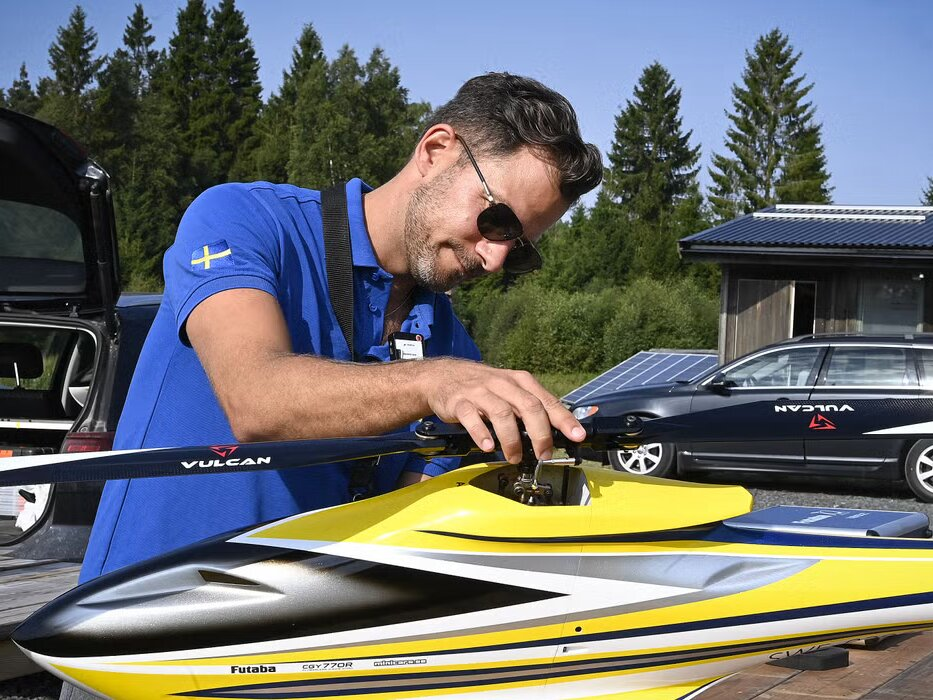

New tool for visualising F3C schedules
Check out what our British friend Bruce Naylor is developing! Think it could become a really useful tool for learning new schedules and clarifying every manoeuvre.

Everything happening in Swedish F3C — competitions, results, invitations and updates, in chronological order.

Check out what our British friend Bruce Naylor is developing! Think it could become a really useful tool for learning new schedules and clarifying every manoeuvre.

A little inspiration from the Japanese Championship in the winter dark: see more clips under International video.

Johannes Melén takes over the role of GS for F3C in Sweden. We thank Anders Stålblom for his work over the past years! 🙏🏻

Over the past weekend the Swedish Championship in F3C was decided at Väsby Modellflygare in Stockholm. The competition was very successful, with fine weather and many visitors. It was great to see several new competitors who took the step and entered F3C! Four rounds were flown in total, in both F3C and Popular. Swedish champion once again was Johannes Melén — huge congratulations!
A big thank you to Leif and Leif, who travelled a long way to help judge — your effort is invaluable! We'd also like to thank RcDepot Norway for sponsoring a very fine prize! You'll find the results on the Results page, and photos from the competition are up on the Media page.

There's now less than a month left until the Swedish Championship / UT-3, organised by Väsby Modellflygare in Stockholm on 5–6 September. We compete in the F3C FAI, Sport and Popular classes. For those who haven't already, it's time to sign up at f3scoring.com.

Johannes recently found a page online with photos and text from the World Championship in the USA in 2009 — definitely worth a visit! f3c-sweden.weebly.com/bilder.html — if we understood correctly, it's Ulf Nilsson who's behind the page.

Over the weekend, Krister Torstensson organised a heli meeting in Trollhättan. Despite strong winds, there was a good turnout with pilots from both Sweden and Norway. Photo: Ulf Nilsson. More photos from the meeting can be found under Media.

UT-2 took place in Örebro over the past weekend. It also marked the inauguration of the F3C-Vintage class. Over the weekend, four rounds of FAI-F3C and three rounds of the new Vintage class were flown. The old methanol machines flew impressively well, while also creating some drama with several unplanned autorotations! Despite temperatures above 30 degrees, everyone's spirits stayed high. A big thank you to Jani and RFK Ikaros for a very enjoyable competition!

This year's first competition was held in Elverum, Norway, on 30–31 May. Historically the competition has always been on the first weekend of May, but due to uncertain weather and a risk of snowfall it was moved. A total of 13 pilots took part in the 2026 edition of Gränscupen, a travelling trophy held by skilled F3C competitors since 1985. Five Swedish pilots took part: Johannes, Krister, Anders, Jesper and Jonas — all did very well given the unsettled spring weather, with gusty winds at times.
Since national team points count towards the next World Championship, this year's standings can be found under Events → National Team.
All competition dates are now confirmed and up under Events. Sign-up is done via F3Scoring. First out is Gränscupen in Elverum, Norway, on 30–31 May. Not long to go now!
The F3C Sporting Code 2026 is now available under Rules. Wishing everyone a very Happy New Year!
The results from SM are now up, along with photos and video. A very successful competition, despite strong winds at times. Thanks to everyone involved, and not least to our sponsors! #Minicars #HAB #RCDepotNorway
Today is the first competition day of the F3CN World Championship in Romania! Unfortunately Sweden isn't represented this time. Hopefully we'll put a team together for 2027. You can follow the results live at f3scoring.com.
There's now less than two weeks until SM in Jönköping. If you haven't signed up yet, it's still possible at f3scoring.com.
Over the past weekend, Gränscupen was held for the 40th time! The competition was very successful, with fine weather and a large number of competitors from Denmark, Norway and Sweden.
The Judges' Course 2025 is now up for anyone interested in reading up a bit. Suitable for both judges and competitors.
Invitations are now up for Gränscupen on 10–11 May in Trollhättan, and for SM on 16–17 August in Jönköping. Head in and sign up via the respective links under Events. We're looking forward to a truly great season!
The F3C Sporting Code 2025 is now available under Rules.
The 2025 F3C season is approaching fast. Wishing everyone a Happy New Year!
UT2 7–8 June, RFK Viggen in Borlänge. SM 16–17 August, Jönköpings Radio Flyg Klubb. The date for Gränscupen is provisionally the first weekend of May (3–4) in Trollhättan. Remember: we are the sport — without us there's no F3C Sweden.
— Stålis, GS F3C
Gränscupen in Elverum, Norway is held on 11 May! Since more than three Swedes are registered, UT points will count. Good luck to all competitors!
There's now a new version of the national rulebook, approved by the Swedish Aeronautical Sports Federation in April 2024. You'll find it under the Rules tab.
Anders Stålblom becomes the new GS for F3C in Sweden. Hans Eriksson steps down from his previous role, with our thanks.